Выставка «Виштынецкие сокровища гномов»
Виштынецкий экомузей принял участие в фестивале «Музейный гид — 2013».
Виштынецкий экомузей принял участие в фестивале МУЗЕЙНЫЙ ГИД-2013, который состоялся в Москве в Центральном доме художников. В этом году он проходил на площадке большой международной выставки ИНТЕРМУЗЕЙ с 31 мая по 3 июня.
Проект «Виштынецкие сокровища гномов», в 2011 году стал победителем конкурса «Меняющийся музей в меняющемся мире», который проводит Благотворительный фонд В. Потанина. Семь лучших реализованных проектов 2001–2012 годов были представлены на выставке фестиваля Музейный гид-2013.
Как была устроена выставка
Выставка специально была подготовлена для участия в фестивале. Cовместно с Виштынецким музеем над ней работали специалисты из Санкт-Петербурга: сотрудники Бюро «АртТерра», художник Никита Сазонов при участии Евгении Фякинской и Елизаветы Гезенцвей. Курировали её подготовку Мария Коростелёва и Олег Николаев.
Работа над выставкой шла несколько месяцев, необходимо было не только решить, как на относительно ограниченном пространстве полноценно представить проект, ведь часть созданной образовательной программы проходит на открытом воздухе с реальными каменными объектами: валунами, мощёными дорогами, домами. Невозможно было на выставке создать и музейное подземелье, куда участники программы попадают во второй части занятия.
Все эти сложности удалось преодолеть, и для выставки была разработана концепция, позволявшая не только донести смысл идеи проекта, но и ввести некоторые новые элементы. Надо сказать, что выставка получилась очень удачной, интересной для взрослых и детей любого возраста.
Здесь можно было посетить и горы Скандинавии, откуда камни с ледником отправлялись в дальние путешествия на юг, и Виштынецкую возвышенность — конечный пункт их странствий. И конечно, можно было попасть в гномью мастерскую, где узнать не только название камня, его возраст, но и место происхождения, а также взвесить камень, определить его твёрдость, и даже заглянуть внутрь него.
Чтобы переместить камень из Скандинавии, сделанной в виде большого макета горы, на Виштынецкую возвышенность подобно тому, как это делал когда-то исполинский ледник, достаточно было поркутить ленту транспортёра.
Также маленьких и взрослых посетителей ждала масса заданий: разгадать загадки о гномах и узнать особенности скандинавского фольклора, по фотографиям найти способы применения камня человеком и раскрасить рисунки, заполнить паспорт камня, вписав в него все добытые о нём знания.
На выставке можно было заглянуть в «Шкаф времени»! В нём за каждой дверкой, соответствующей тому или иному геологическому периоду нашей планеты, скрывался его каменный свидетель. Здесь же можно было увидеть, как выглядела наша планета в те давние времена.
За несколько дней работы фестиваля выставку посетили тысячи людей. И практически каждый попытался отыскать сокровища гномов. Справляться с огромным потоком желающих поучаствовать в поиске сокровищ помогали волонтёры. Иногда и сами посетители выставки, как правило дети, приходя снова и снова, становились волонтёрами, объясняя новым участникам её идею и помогая ориентироваться в последовательности действий.
Фотографии выставки
Среди представленных материалов — макет «Скандинавские горы» с различными згадками в пещерах и демонстрация определения твёрдости минералов, входящих в состав камня.
Отдельный сюжет выставки — возможность заглянуть в «Шкаф времени».
Фотографии сохранены в исходном порядке из архива страницы.
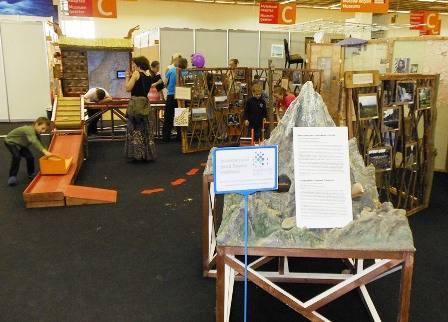
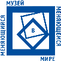
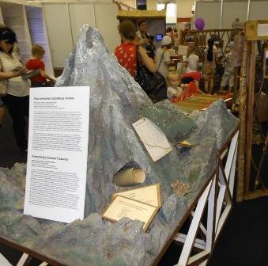
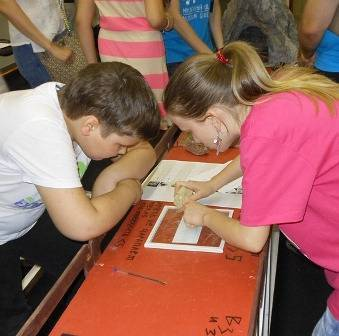
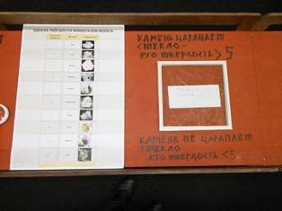
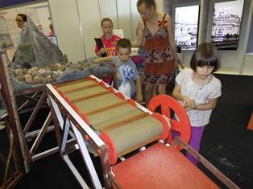
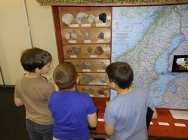
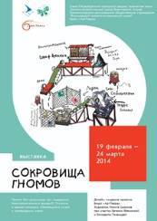
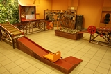
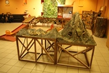
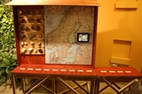
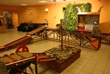
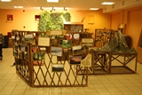
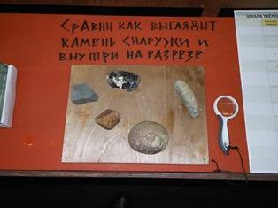
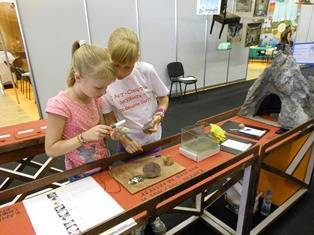
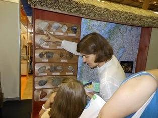
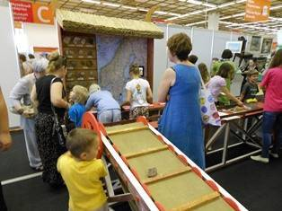
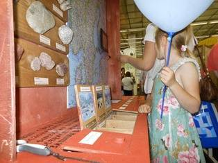
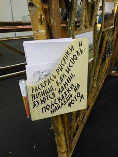
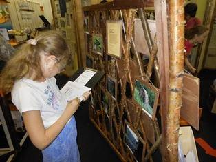
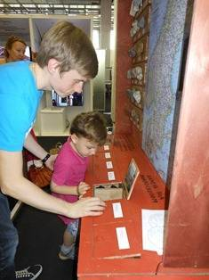
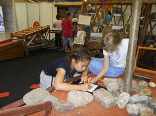

Где проходила выставка
С 19 февраля выставка работает в Санкт-Петербурге в эколого-биологическом центре «Крестовский остров».
Адрес: г. Санкт-Петербург, Крестовский пр., 19. Главный корпус эколого-биологического центра.
Информация: на портале «Музеи России».
Фото: О. Николаев; А. Соколов. 10 июня 2013 г.